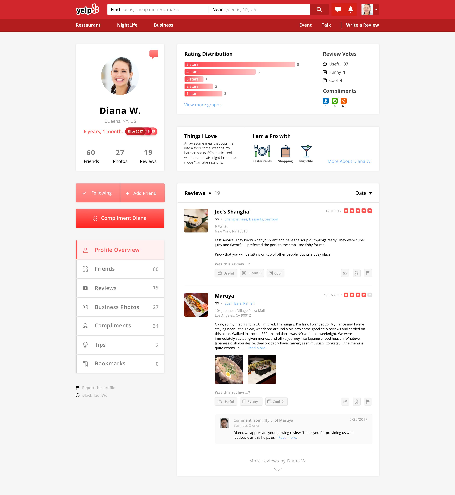

After exploring the user profile and features that Yelp provides, I am working on a quick hack of interface design that rearranges the fragments on the page layout.
The current profile page has several items that are functional overlapped or duplicated, which I believe could be configured and simplified to make the interface cleaner and concise.
Below is a screenshot that I randomly chose from a yelper’s profile page and highlighted the areas that I think it has opportunity to improve.
Current User Profile, random screenshot.The area that highlighted with blue, shows the information of location, start date, and with the numbers of friends, reviews, and photos, which I think they can be put together in the same place.
Also, the yellow areas can be combined in some way as well.
User Profile UI Redesign
So here is my quick hack of the redesigned interface. The goal is to make the experience simpler, by integrating several duplicated functions and sorting them in a more logical and intuitive way.
 user profile ui redesign. See the full image on drive.Photograph by Scott Osborne.